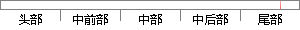

（2）根据保留交叉验证以及十折交叉验证的结果，Logistic回归和两种决策树（C5.
片段位置图

相似结果|
相似片段 1：研究中，我们采用Tanagra软件对数据进行决策树分析、分类回归树分析、支持向量机分析以及线性判别分析，并同时进行留一法、19叠、5叠和2叠交叉验证的分析。4．4结果4．4．1实例分析结果我们利用基于
|
※ 片段修改建议 ※
近似词参考：- 根据：按照 凭据 依据
- 保留：保存
- 交叉：交织
- 以及：和
- 交叉：交织
- 结果：成果 成绩 成效 后果 了局 效果
系统自动生成语句：（2）按照保存交织验证和十折交织验证的成果，Logistic回归和两种决策树（C5.
注：本片段修改建议为系统自动生成，仅供参考。